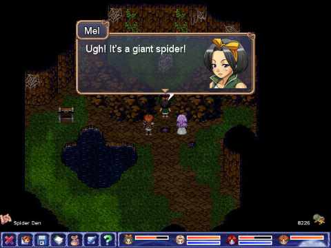

In fulfillment of prophecy, the evil sorcerer, Mordred Darkthrop, initiated a series of actions that would eventually see him rule the world. Darkthrop's reign of tyranny and his lineage ended abruptly, when he and his only son died moments before his goal was realized. The prophecy, however, lingered on.
Two hundred years later, young Mel, a common street thief, is about to have her life turned upside down, as another stands determined to succeed where Darkthrop failed, and to see the prophecy to its fulfillment.
Solve dozens of adventure puzzles and explore an enchanting world. Lord of Twilight is packed with monsters, magic, and humor. Race from an evil vampire lord, intent on plunging the world into darkness and enslaving humanity. Gather a colorful group of companions and set out together on a quest to thwart his plans. Traverse a vast, snowy wilderness, rugged mountain ranges, and get a glimpse into the Underworld on your adventure.
Lord of Twilight is part 1 of the Orbs of Magic series.
(Also available for Windows and Linux)
Price: $8.99 $10.99
Category: Aveyond, RPG
Publisher: Aveyond Studios, RadialApps
 Download Size: 100MB
Download Size: 100MB macOS, OS X
RAM: 1GB recommended
Hard Disk Space: 150MB
Discuss this game in the forum

|
|
|  |

|
- Download the demo here. Keep it in a user directory like Downloads or Desktop
- Double click the zip file. This will extract the contents of the package.
- Run the app!
How to run the game?
Aveyond for Mac is completely DRM-free. Once you buy the game, you will be provided with a zip file just like the demo. Follow the same instructions to run the game!
Please try out the trial demo before buying to be sure that your system supports the game.
In case you encounter errors related to "Unverified Developer", please consult and follow the instructions from the following page:
https://support.apple.com/kb/PH25088